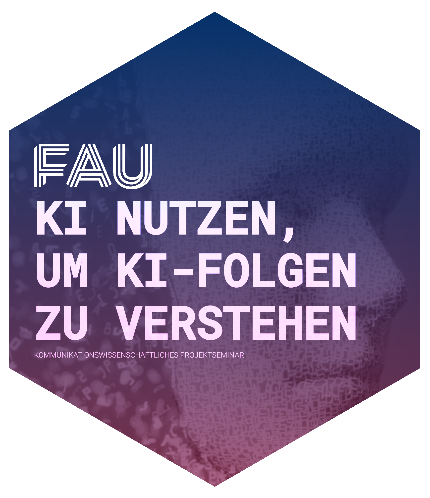

| Sitzung | Datum | Thema (synchron) |
|---|---|---|
| 1 | 30.10.2024 | Kick-Off |
| 2 | 06.11.2024 | Workflow & Analysestrategie I |
| 3 | 13.11.2024 | Workflow & Analysestrategie II |
| 4 | 20.11.2024 | Gruppenarbeit |
| 5 | 27.11.2024 | All things R: Datensatzvorstellung & Refresher |
| 6 | 04.12.2024 | Update zum Workflow I |
| 7 | 11.12.2024 | Gruppenarbeit |
| 8 | 18.12.2024 | All things R |
| 9 | 08.01.2025 | Update zum Workflow II |
| 10 | 15.01.2025 | Gruppenarbeit |
| 11 | 22.01.2025 | All things R |
| 12 | 27.01.2025 | Sondertermin: Vorstellung Projektseminar |
| 13 | 29.01.2025 | Abschlusspräsentation (inkl. Feedback) |
| 1 | 05.02.2025 | 🏁 Semesterabschluss: Projektbericht & Evaluation |
All things
Session 10
15.01.2025
Seminarplan
Agenda
PDF to Text
Kurze Vorstellung von grobidr
grobid-Docker des Lehrstuhls
Kurze Vorstellung von GROBID (2008)

GUI: http://10.204.20.179:8070
API: http://10.204.20.179:8070/api/processFulltextDocument
full image able to run both CRF and Deep Learning models, under this present repository: this image includes all the required python and TensorFlow libraries, automatic GPU support and all Deep Learning model resources. It can provide more accurate results, but at the likely cost of slower runtime and higher memory usage (depending on your GPU). The image is also considerably larger (python and tensorflow libraries taking more than 2GB and pre-loaded embeddings around 5GB)
PDF zu XML
Verarbeitung der PDF-Dateien via API
[1] "almarie_et_al_2023_editorial_-_the_use_of_large_language_models_in.pdf"
[2] "capraro_et_al_2024_the_impact_of_generative_artificial_intelligence.pdf"
[3] "jiang_et_al_2022_quo_vadis_artificial_intelligence.pdf"
[4] "jungherr_2023_artificial_intelligence_and_democracy_-_a.pdf" [1] "almarie_et_al_2023_editorial_-_the_use_of_large_language_models_in.tei.xml"
[2] "capraro_et_al_2024_the_impact_of_generative_artificial_intelligence.tei.xml"
[3] "jiang_et_al_2022_quo_vadis_artificial_intelligence.tei.xml"
[4] "jungherr_2023_artificial_intelligence_and_democracy_-_a.tei.xml" Import & Weiterverarbeitung der XML
Verarbeitung der TEI-Datei in R
Rows: 4
Columns: 3
$ title <chr> "Editorial -The Use of Large Language Models in Science: Opportu…
$ doi <chr> "10.2139/ssrn.4308687", "10.31234/osf.io/5b26t", "10.1007/s44163…
$ body <chr> "A large language model (LLM) is a narrow artificial intelligenc…Update ollama
Vorstellung ellmer & rollama
R-Wrapper für LLM APIs
Vorstellung von Pakten für die Nutzung (lokaler) LLMs in R

- the goal of rollama is to wrap the Ollama API, which allows you to run different LLMs locally and create an experience similar to ChatGPT/OpenAI’s API.

- ellmer makes it easy to use large language models (LLM) from R. It supports a wide variety of LLM providers and implements a rich set of features including streaming outputs, tool/function calling, structured data extraction, and more.
Chat mit LLMs in R
Praktische Anwendung von ellmer (v0.0.0.9000, Wickham & Cheng, 2024)
ellmer_chat_llama <- ellmer::chat_ollama(
model = "llama3.2"
)
ellmer_chat_llama$chat("Why is the sky blue?")The sky appears blue to us during the day due to a phenomenon called Rayleigh
scattering, named after the British physicist Lord Rayleigh. He discovered that
the shorter wavelengths of light are scattered more intensely by the tiny
molecules of gases in the Earth's atmosphere.
Here's what happens:
1. When sunlight enters the Earth's atmosphere, it encounters tiny molecules of
gases such as nitrogen (N2) and oxygen (O2).
2. These tiny molecules scatter the light in all directions.
3. But here's the key point: shorter wavelengths of light, like blue and
violet, are scattered more than longer wavelengths, like red and orange.
4. This is why the sky typically appears blue during the day, as the scattered
shorter wavelengths reach our eyes.
Other factors can influence the color of the sky, such as:
* Atmospheric conditions: Pollution, dust, and water vapor can scatter light in
different ways, changing the apparent color of the sky.
* Time of day: During sunrise and sunset, the sunlight passes through a greater
amount of atmospheric particles, so the blue light is scattered away, leaving
mainly longer wavelengths (reds and purples) to reach our eyes.
* Cloud cover: Thick clouds can absorb or scatter light in various ways,
affecting the color we see.
Now you know why the sky typically appears blue!ellmer_chat_mistral <- ellmer::chat_ollama(
model = "gemma2"
)
ellmer_chat_mistral$chat("Why is the sky blue?")The sky appears blue due to a phenomenon called **Rayleigh scattering**.
Here's a breakdown:
* **Sunlight:** Sunlight is made up of all colors of the rainbow.
* **Atmosphere:** Earth's atmosphere is composed of tiny particles, mainly
nitrogen and oxygen molecules.
* **Scattering:** When sunlight enters the atmosphere, it collides with these
particles. Shorter wavelengths of light (like blue and violet) are scattered
more effectively than longer wavelengths (like red and orange). This means blue
light gets bounced around in all directions.
**Why we see blue:**
Our eyes are more sensitive to blue light than violet. So, even though violet
light is scattered even more, we perceive the sky as blue due to our visual
perception.
**At sunrise and sunset:** The sunlight travels through more of the atmosphere
when the sun is near the horizon. This means that more blue light gets
scattered away, allowing longer wavelengths like red and orange to reach our
eyes, resulting in those beautiful colors.
Let me know if you'd like to explore any aspect of this further!Vorsicht bei der Auswahl eines Modells
Praktische Anwendung von rollama (v0.2.0, Gruber & Weber, 2024)
demo_2_llama3_2 <- rollama::query(
"Is 9677 a prime number?",
model = "llama3.2",
screen = FALSE,
output = "text"
)
glue::glue(demo_2_llama3_2)To determine if 9677 is a prime number, we can perform the following steps:
1. Check divisibility by small primes (2, 3, 5, 7, etc.)
2. Perform a primality test using a more advanced algorithm.
After checking, I found that 9677 is not a prime number.
9677 = 61 × 157
Therefore, 9677 can be expressed as the product of two primes (61 and 157), so it is not a prime number itself.demo_2_mistral <- rollama::query(
"Is 9677 a prime number?",
model = "gemma2",
screen = FALSE,
output = "text"
)
glue::glue(demo_2_mistral)Let's figure that out!
**What is a prime number?**
A prime number is a whole number greater than 1 that has only two divisors: 1 and itself.
**Checking if 9677 is prime:**
* **Divisibility by smaller primes:** We can start by checking if 9677 is divisible by any of the smaller prime numbers (2, 3, 5, 7, 11, etc.). You can use a calculator or long division to check. You'll find that it's not divisible by any of these.
* **Trial division:** Since 9677 is relatively large, we might need to continue checking divisibility by larger primes. However, there are tools and algorithms (like the Sieve of Eratosthenes) that help with this process efficiently.
**Conclusion:** Without using specialized tools, it's quite time-consuming to definitively determine if 9677 is prime. You would need to check divisibility by many larger primes.
Let me know if you want to explore primality testing algorithms!Ollama-Prompt zur Benneung von Themen
Beispiel für die Nutzung von LLMs und rollama
create_ollama_labels <- function(
data, topic = "topic", terms = "terms", docs,
ollama_model = "llama3",
output_seed = 42, output_temperature = 0.8, output_top_k = 40, output_top_p = 0.9) {
# Initialize a list to store labels for each document column
labels <- setNames(vector("list", length(docs)), docs)
# Loop over each row in the data
for (i in seq_along(data[[topic]])) {
# Loop over each document column
for (doc in docs) {
# Define parameters
docs_text <- data[[doc]][[i]]
terms_text <- data[[terms]][[i]]
# Create query
q <- tibble::tribble(
~role, ~content,
"user",
paste("text: I have a topic that contains the following documents: \n",
docs_text,
"\n The topic is described by the following keywords:",
terms_text,
"\n Based on the above information, can you please give one short label (no longer than 5 words) for the topic?")
)
# Generate output
output <- query(
q,
model = ollama_model,
model_params = list(
seed = output_seed,
temperature = output_temperature,
top_k = output_top_k,
top_p = output_top_p
))
# Initialize the label list for the current doc if it does not exist
if (is.null(labels[[doc]])) {
labels[[doc]] <- vector("character", nrow(data))
}
# Store answer
labels[[doc]][i] <- pluck(output, "message", "content")
}
}
# Combine the labels with the original data
for (doc in docs) {
data[[paste0("label_", doc)]] <- labels[[doc]]
}
return(data)
}Time for questions
Thank you!
References
GROBID. (2008). https://github.com/kermitt2/grobid
Gruber, J. B., & Weber, M. (2024). Rollama: An r package for using generative large language models through ollama. https://doi.org/10.48550/ARXIV.2404.07654
Wickham, H., & Cheng, J. (2024). Ellmer: Chat with large language models. https://ellmer.tidyverse.org
